github : https://github.com/brunosimon/hetic-p2018
site : http://bruno-simon.com/hetic/p2018/
contact : bruno.simon@hetic.net - @bruno_simon
L'ID est presque toujours présent dans chaque table
Il permet d'identifier de façon unique chaque ligne
Chaque colonne doit être d'un type particulier
Il en existe plusieurs
Et encore plein d'autres
Pour les colonnes de type text ou varchar, il faut spécifier l'encodage
L'encodage est important à la fois pour sauvegarder certains caractères, mais aussi pour faire des recherches sur la base de donnée
Les plus utilisés sont :
PhpMyAdmin :
Mac :
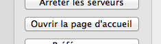 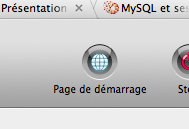
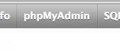
Windows :
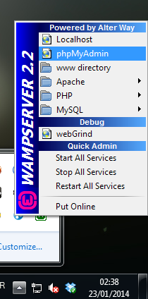
Comme nous sommes en local, nous allons utiliser le compte root
Il est préférable, une fois en ligne, d'utiliser un compte avec moins de droits
Pour rajouter un compte, dans PhpMyAdmin, allez dans l'onglet Utilisateurs puis cliquez sur Ajouter un utilisateur
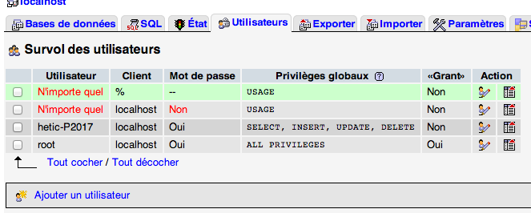
Créez votre première base de données dans l'onglet Bases de données
Appellez-la comme vous le voulez et choissez utf8_general_ci (lettres et underscores uniquement)
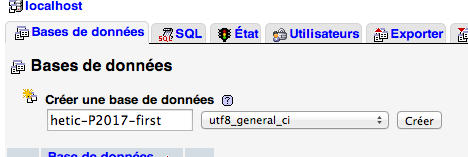
Rentrez dans la base de données (menu de gauche)
Créez une nouvelle table nommée users avec 5 colonnes
Cliquez sur Exécuter
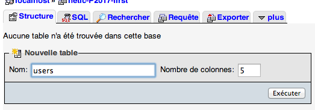
Dans le formulaire qui apparait, chacune des lignes correspond aux colonnes de la base de données
Remplissez-les comme cela :
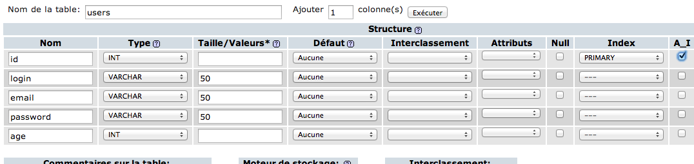
Essayez :
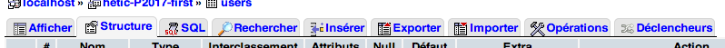
Lorsque l'on utilise PhpMyAdmin, celui-ci effectue des requêtes SQL
Ce sont des requêtes indiquant à la base de donnée quoi faire (ajoute une donnée, supprime cette ligne, créé une colonne, ...)
Nous allons apprendre à effectuer ces requêtes SQL nous-même
Cliquez sur le petit icône SQL dans le menu de gauche pour ouvrir une popup
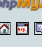
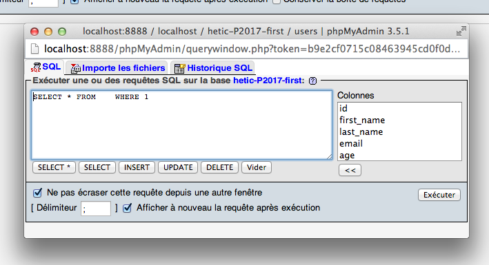
Essayez les requêtes SQL suivantes
INSERT INTO users (login, password, email, age)
VALUES ('bruno', 'azerty', 'bruno@simon.com', 24)
UPDATE users SET login = 'bueno' WHERE id = 1
SELECT * FROM users
SELECT id, email FROM users WHERE login = 'bueno'
DELETE FROM users WHERE id = 1
Il faut se connecter à la base de données
L'ancienne méthode
$db = mysql_connect('localhost','user','password');
mysql_select_db('database');
Nouvelle méthode via PDO
try
{
$pdo = new PDO('mysql:dbname=hetic-p2018-first;host=localhost','root','root');
}
catch (PDOException $e)
{
die('error');
}
PDO permet de se connecter à la base de données
Version plus complète
// Connexion variables
define('DB_HOST','localhost');
define('DB_NAME','hetic-p2018-first');
define('DB_USER','root');
define('DB_PASS','root'); // '' par défaut sur windows
try
{
// Try to connect to database
$pdo = new PDO('mysql:host='.DB_HOST.';dbname='.DB_NAME,DB_USER,DB_PASS);
// Set fetch mode to object
$pdo->setAttribute(PDO::ATTR_DEFAULT_FETCH_MODE,PDO::FETCH_OBJ);
}
catch (Exception $e)
{
// Failed to connect
die('Cound not connect');
}
// Delete next line if working
die('All good ;)');
Récupérer des données avec query()
La méthode query() renvoie un objet de type PDOStatement
Cet objet possède des méthodes :
Avec fetchAll()
$query = $pdo->query('SELECT * FROM users');
$users = $query->fetchAll();
echo '<pre>';
print_r($users);
echo '</pre>';
Avec fetch() dans un while
$query = $pdo->query('SELECT * FROM users');
while($user = $query->fetch())
{
echo '<pre>';
print_r($user);
echo '</pre>';
}
$user correspond à chaque ligne
Arrivée à la fin, fetch() va renvoyer false et le while va donc s'arrêter
Par défaut, PDO renvoie un tableau dans un format étrange
Dans notre exemple, la ligne de code juste après la création de PDO nous permet de le forcer à renvoyer des objets
$pdo->setAttribute(PDO::ATTR_DEFAULT_FETCH_MODE,PDO::FETCH_OBJ);
Modifier, supprimer et ajouter des données avec exec()
La méthode exec() exécute une requête SQL et renvoie le nombre de lignes affectées
Avant d'écrire une requête SQL dans exec() il est conseillé de la tester directement dans PhpMyAdmin
En PHP, essayez les requêtes suivantes
// Ajouter une ligne dans la table users
$exec = $pdo->exec('INSERT INTO users (login,password,email,age) VALUES (\'bruno\',\'azerty\',\'bruno@simon.com\',24)');
echo '<pre>';
print_r($exec);
echo '</pre>';
// Mettre à jour une ligne dans la table users
$exec = $pdo->exec('UPDATE users SET login = \'toto\' WHERE id = 2');
echo '<pre>';
print_r($exec);
echo '</pre>';
Les requêtes SQL deviennent vite trop compliquées comme ci-dessous
$exec = $pdo->exec('INSERT INTO users (login,password,email,age) VALUES (\''.$data['login'].'\',\''.$data['password'].'\',\''.$data['email'].'\','.$data['age'].')');
Il est visuellement trop difficile de dinstiguer les différents éléments dans la requête SQL
PDO offre une solution
// Prepare the query
$prepare = $pdo->prepare('INSERT INTO users (login,password,email,age) VALUES (:login,:password,:email,:age)');
// Set variables
$prepare->bindValue(':login',$data['login']);
$prepare->bindValue(':password',$data['password']);
$prepare->bindValue(':email',$data['email']);
$prepare->bindValue(':age',$data['age']);
// Execute the query
$exec = $prepare->execute();
Ce n'est pas plus rapide à écrire, mais c'est beaucoup plus clair
$prepare = $pdo->prepare('INSERT INTO users (login,password,email,age) VALUES (:login,:password,:email,:age)');
/* ... */
La méthode prepare() prépare la requête SQL
Les différentes valeurs sont remplacées par des identifiants avec le signe : devant
/* ... */
$prepare->bindValue(':login',$data['login']);
$prepare->bindValue(':password',$data['password']);
$prepare->bindValue(':email',$data['email']);
$prepare->bindValue(':age',$data['age']);
/* ... */
La méthode bindValue() sur l'objet renvoyé par prepare() permet d'assigner les valeurs à chaque identifiant
/* ... */
$exec = $prepare->execute();
Il ne reste plus qu'à exécuter la requête avec la méthode execute() sur l'objet renvoyé par prepare()
L'object renvoyé par execute() fonctionne comme l'objet renvoyé par exec() ou par query()